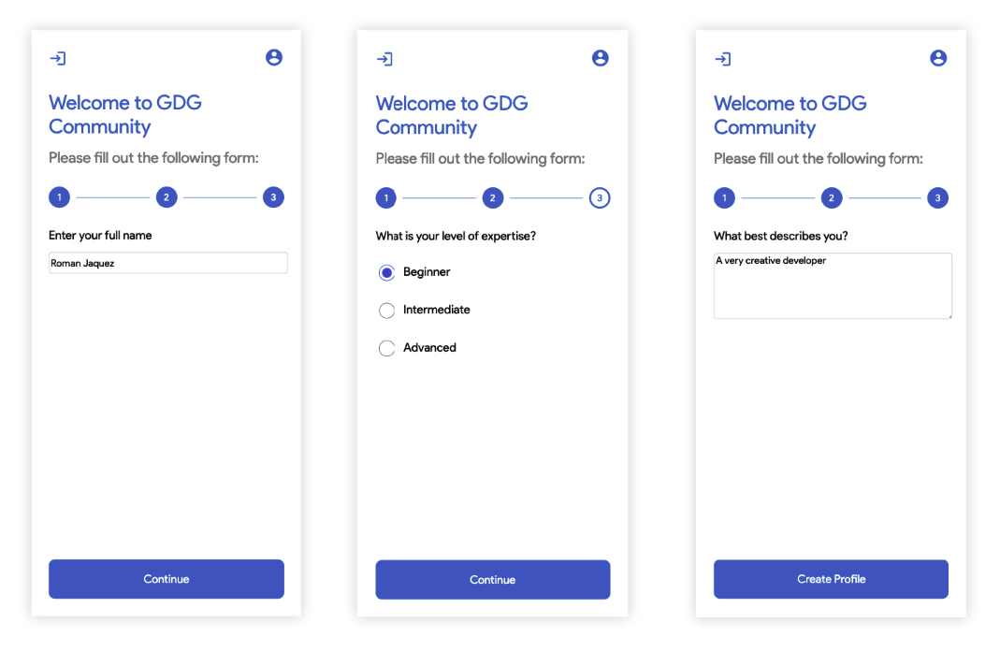

This codelab provides the tutorial on how to create the GDG Community project form to allow users to provide input into the system and allow them to register.
What you will learn
- How to create the Form page
- Adding Interface Models
- Basic Understanding on Angular's State Management using Services, Rxjs's BehaviorSubject, Observables and Subscriptions
- How to create reusable Angular Components
- More on Responsive Design / Flexbox Model / CSS3 strategies
- Submitting Data to Firebase Backend
Prerequisites
- Full Stack Development Environment Setup
- Familiar with Html, CSS, and Typescript
- Internet Connection
At the end of this lab, you will have a form page that looks like the following:

In the previous lab, you should've created the login page in full, and the placeholder form page. If not, refer back to the previous lab where the form page is created, then come back to this lab.
If so, please find the form.component.html. Let's build the page structure.
<div id="form-page-container">
<!-- placeholder for application bar -->
<div class="form-page-wrapper">
<header>
<div class="form-page-welcome">Welcome to GDG Community</div>
<div class="form-page-msg">Please fill out the following form:</div>
</header>
<section class="form-step-container">
<!-- placeholder for form steps -->
<div class="form-step">
<!-- placeholder for steps -->
</div>
</section>
<button class="form-continue-btn common-btn">
Continue
</button>
</div>
</div>
Lets include the following CSS in the corresponding form.component.less.
@import './../../assets/styles/colors.less';
#form-page-container {
height: 100vh;
display: flex;
flex-direction: column;
.form-page-wrapper {
margin: 32px;
display: flex;
flex-direction: column;
height: 100%;
flex: 1;
.form-page-welcome {
font-size: 32px;
color: @color_blue;
}
.form-page-msg {
margin-top: 16px;
font-size: 24px;
color: @color_grey;
}
.form-step-container {
flex: 1;
}
.form-continue-btn {
background: @color_blue;
&:disabled {
opacity: 0.5;
cursor: not-allowed !important;
}
}
.form-step {
margin-top: 32px;
}
}
}
The #form-page-container will occupy the full height of the browser's viewport and display its child items in a column.
The .form-page-wrapper is the most immediate child of the #form-page-container, which in turn also lays its children as a column using display: flex, and flex-direction: column. It uses a height: 100% to match its parent's height and flex: 1 so as to take up the most room in the available space heightwise within its parent. More info on flexbox here.
Inside the app project folder, create a folder called models. This folder will hold some interfaces - files that contain the contract that the user must follow when creating JSON objects as far as their properties and their correspondign type. Let's create an interface called StepModel. We will be using this model for holding a reference to a form step. Save it as step.model.ts.
export interface StepModel {
stepIndex: number;
isComplete: boolean;
isCurrent: boolean;
}
This model defines three properties:
- stepIndex: with type number which hold the step's index.
- isComplete: with type boolean which will hold the value whether the step is complete or not.
- isCurrent: with type boolean which holds the value whetehr the step is the current one, as the user traverses through the form steps.
We'll create more models later as we need them.
In order to maintain a reference to the form steps available, what the current step is, etc. in a global, application-wide manner, Angular relies on services. Angular Services are entities that are provided via dependency injection to whoever is interested, and can be used to hold data and application state and to be shared among components and services. Services the glue that holds together components and services in a loosely coupled fashion. More on services here.
In the services folder, create a service called steps using the Angular CLI:
ng g s steps
The Angular CLI creates a file named steps.service.ts with some boilerplate code. The name of the service class is called StepsService. In order to make it available throughout the application as a global singleton, you must add it as a provider to the main app's module.
Go to the app.module.ts and add the StepsService as a provider, along with the AuthenticationService. Locate the providers section, and add the service as follows:
...
providers: [
AuthenticationService,
StepsService // <-- will make it available globally as a singleton
],
...
Now, let's get back to the StepsService service file. At the top of the file, let's create the schema for what the steps payload should look like:
...
const STEPS = [
{ stepIndex: 1, isComplete: false, isCurrent: false },
{ stepIndex: 2, isComplete: false, isCurrent: false },
{ stepIndex: 3, isComplete: false, isCurrent: false }
];
...
Inside of the StepsService class, let's add references to the steps and current steps, making them of type BehaviorSubject. A BehaviorSubject allows entities to subscribe to it, and receive / listen to value changes as they occur over time, as they change. BehaviorSubjects require a seed / initial value and emit the current value to new subscribers. BehaviorSubjects are an RxJS concept. More on BehaviorSubjects here.
...
steps$: BehaviorSubject<StepModel[]> = new BehaviorSubject<StepModel[]>(STEPS);
currentStep$: BehaviorSubject<StepModel> = new BehaviorSubject<StepModel>(null);
...
We initialize the steps$ BehaviorSubject with the STEPS constant as they require a seed value. The currentStep$ is set to null initially as we don't want any step to be the current one initially. Notice the dollar sign nomenclature used for BehaviorSubjects - this is used to denote that the property is subscribable (such as Observables - properties that users can subscribe to in order to get values streamed to it, or notified of an update in some way).
Add the rest of the following logic to the steps service, which provides a very comprehensive API that allows users to get the steps,the current step, set the current step, moving to the next step and checking whether the current step is the last one.
Add the constructor
Initially we want to start the application by telling the service what the first step is. So right at the constructor, we will assign the current step to be the first one in the steps collection:
...
constructor() {
// set the current step to be the first one in the list of steps.
this.currentStep$.next(this.steps$.value[0]);
}
...
Add ability to get the current step
We need to allow interested parties to subscribe to what the current step is, whenever it changes, etc. and get notified of it. For that, we return the current step as an Observable so components can subscribe to it, that way we know what the current step is at all times, from anywhere in the application:
...
// gets the current step and allows user to subscribe to it
// by returning it as an Observable
getCurrentStep() {
return this.currentStep$.asObservable();
}
...
Add ability to set the current step
Now, say you want to update the current step yourself, whether by clicking on that particular step and navigating to it. We will provide a method that does just that. It takes a model of type StepModel and updates the current step. If anyone is subscribed to it, it will receive the notification that it changed.
...
// sets the current step
setCurrentStep(step: StepModel) {
this.currentStep$.next(step);
}
...
Add ability to get all steps
What if someone wants to know what all of steps are, their count, etc? Well we can also provide a method that returns an Observable you can subscribe to, and subscribe to changes to all steps as a whole.
...
// gets all available steps, and allows
// the users to subscribe to this list of steps
getSteps() {
return this.steps$.asObservable();
}
...
Ability to programatically move to the next step
We'll provide the ability to allow users to move to the next step from wherever they are, whoever subscribes to the StepsService and executes this method will be able to do it. The code fetches what the current step's index is, and based on that it knows whether it can move to the next, based on the number of steps available and whether the current step index is not the last one or hasn't reached the last index (index < this.steps$.value.length).
...
// allows the users to programatically move to the next step
// and notify any users subscribed to the currentStep$ to be notified
moveToNextStep() {
const index = this.currentStep$.value.stepIndex;
if (index < this.steps$.value.length) {
this.currentStep$.next(this.steps$.value[index]);
}
}
...
Ability to check whether the current step is the last step
This is a nifty little method we created that quickly returns to the user a flag whether the current step being executed is the last one.
...
// gets whether the current step is the last one in the list
isLastStep() {
return this.currentStep$.value.stepIndex === this.steps$.value.length;
}
...
Using BehaviorSubject inside your services allows users to subscribe to it, receive notifications when values are available, when they change, and allows you to maintain state across components throughout the lifetime of your application's execution in a very simple and straightforward way, all in memory.
Let's go to the form.component.ts to add some of the code behind logic.
Inside of the @Component's decorator statement, add the encapsulation: ViewEncapsulation.None to make sure the styles can be overridden by any wrapping parent component and truly achieve a cascading effect on certain styles. Use this attribute with caution as it may have unintended effects. As long as you wrap your CSS classes correctly, you shouldn't have issues.
...
@Component({
selector: 'app-form',
templateUrl: './form.component.html',
styleUrls: ['./form.component.less'],
encapsulation: ViewEncapsulation.None // <-- add this line here
})
...
At the top of the FormComponent, add the following local properties:
...
fullName: string;
selectedExpertise: string;
userDescription: string;
currentStep: StepModel;
currentStepSub: Subscription;
user: User;
userSub: Subscription;
...
The following properties will hold the following:
- fullName: will hold the name of the user
- selectedExpertise: will hold the selected expertise out of several radiobutton options
- userDescription: will hold the user's description
- currentStep: will hold a reference of the current step (coming from a service).
- currentStepSub: will hold a reference to a subscribable version of the current step from a service.
In the constructor of the FormComponent class, inject the services we'll need to pull data from, and subscribe to in order to get notified for data changes.
...
constructor(
private authenticationService: AuthenticationService,
private userService: UserService,
private stepsService: StepsService,
private router: Router) { }
...
In the ngOnInit lifecycle hook, subscribe to the StepsService's getCurrentStep() to get the current step being processed, as well as the AuthenticationService's getUser() to get the logged in user information.
...
ngOnInit(): void {
this.currentStepSub = this.stepsService.getCurrentStep().subscribe((step: StepModel) => {
this.currentStep = step;
});
this.userSub = this.authenticationService.getUser().subscribe((user: User) => {
this.user = user;
});
}
...
One best practice in order to avoid memory leaks when handling subscriptions is to properly clean after those by unsubscribing from them. Therefore, create another appropriate lifecycle hook method - ngOnDestroy - that gets called before this component gets destroyed, and is the right place to clean up resources - in this case, unsubscribe from the subscriptions created in the ngOnInit
...
ngOnDestroy(): void {
// Unsubscribe to avoid memory leaks and unexpected angular errors
this.currentStepSub.unsubscribe();
this.userSub.unsubscribe();
}
...
We'll create several methods that will allow us to trigger actions that will propagate changes throughout the application - right from the FormComponent - and delegate those actions to services, in this case the StepsService. This is the power of services in action - business logic and functionality gets deferred to services while components handle UI rendering and user interactions, following proper Model-View-Controller (or in this case, Services) practices.
Let's create a method that will allow us to move to the next step, which we'll call onNextStep():
onNextStep() {
if (!this.stepsService.isLastStep()) {
this.stepsService.moveToNextStep();
} else {
// TODO: here we'll submit the form
}
}
Let's create a method that marks this step as complete once an option is selected. In the case of radiobuttons, once one of them is selected, you cannot unselect them, so we can treat the step already as complete. This method captures the selectedExpertise option via data-bindings (more on this later) and marks the step as complete.
...
onExpertiseOption() {
this.currentStep.isComplete = true;
}
...
We'll create a method that based on logic, it returns the appropriate string. The method showButtonLabel() shows the corresponding string whether the current step is the last step (Create Profile) or not (Continue):
...
showButtonLabel() {
return !this.stepsService.isLastStep() ? 'Continue' : 'Create Profile';
}
...
You should be all set with all the code-behind or logic corresponding to the form. Now, let's proceed to add the elements that will hold each of the step questions in this form and that will bind to the methods and properties created in the form.component.ts file above.
We'll use a switch/case approach, depending on which question's index, we will render a portion of the DOM, display it to the user and collect a value.
Let's go to the form.component.html file, and locate the div with class form-step. Let's start by creating an Angular's switch statement, by using the [ngSwitch] attribute:
...
<div class="form-step">
<ng-container [ngSwitch]="currentStep?.stepIndex">
<!-- rest of the code will go here -->
</ng-container>
</div>
...
The ngSwitch works just like a regular switch statement - once a case is matched (in our case we want to match against the current step's index - currentStep?.stepIndex), it gets executed, skipping the rest. More info on the ngSwitch.
Note: The question mark (?) next to the currentStep property just states that this property may be nullable: that upon the DOM rendering, this property may not be available, so don't bother rendering this element or block - until the property is available. This is a way to gracefully handling null values that are bound to the DOM.
Let's insert the cases inside the ngSwitch. For each of the step indexes (1 through 3) we will have a corresponding ngSwitchCase - a block of code that once matched against the current steps's index. Note: Make sure to add all ngSwitchCases below inside the ngSwitch.
Adding Step 1
For step one, we will be handling the user to input their full name.
...
<ng-container *ngSwitchCase="'1'">
<div class="step-question-label">Enter your full name</div>
<div>
<input id="fullName" (keyup)="currentStep.isComplete = fullName !== ''"
[(ngModel)]="fullName" type="text" class="input-fullname">
</div>
</ng-container>
...
Notice the input field we are using to collect the user's input, and the special attribute called ngModel. This is the power of Angular's data binding capabilities, that allows the DOM input element to be bound to the property called fullName. When the user provides the input into this field, the value will be provided to the fullName string property automatically. The double wrapping of the ngModel denotes what Angular calls two-way binding - updates on either direction (from DOM element to property or from the property to the DOM element) are synchronized. More on Angular's databinding capabilities here.
Check also how in Angular you can capture actions from the DOM, such as keyup, keydown, click, change, etc. depending on the field. In our case, we want to handle the keyup event from the textfield, and apply the logic to the current step's isComplete property by setting it to true or false whether the property *fullName is empty or not, as the user types in the field and characters are input.
Adding Step 2
For step two, we want to collect the user's expertise via radio buttons, so they can pick one out of three options.
...
<ng-container *ngSwitchCase="'2'">
<div class="step-question-label">What is your level of expertise?</div>
<div class="option-radio">
<input (click)="onExpertiseOption()" type="radio" name="expertiseLevel" value="beginner"
[(ngModel)]="selectedExpertise" id="exp1" />
<label for="exp1">Beginner</label>
</div>
<div class="option-radio">
<input (click)="onExpertiseOption()" type="radio" name="expertiseLevel" value="intermediate"
[(ngModel)]="selectedExpertise" id="exp2" />
<label for="exp2">Intermediate</label>
</div>
<div class="option-radio">
<input (click)="onExpertiseOption()" type="radio" name="expertiseLevel" value="advanced"
[(ngModel)]="selectedExpertise" id="exp3" />
<label for="exp3">Advanced</label>
</div>
</ng-container>
...
Notice the ngModel property selectedExpertise. In the case of a radio button, only one of the selected radio button options will update the selectedExpertise property. It grabs the value in the value attribute (beginner, intermediate or advanced) and assign it to selectedExpertise accordingly. Upon clicking on one of them, it will call the onExpertiseOption method through the click event, which, as shown above, will complete the current step by setting its isComplete property to true.
Adding Step 3
For the last step, we want to collect some text from the user - a brief description.
...
<ng-container *ngSwitchCase="'3'">
<div class="step-question-label">What best describes you?</div>
<textarea [(ngModel)]="userDescription"
(keyup)="currentStep.isComplete = userDescription !== ''" id="profile-desc"
class="textarea-profile"></textarea>
</ng-container>
...
Notice the ngModel property userDescription which binds the text input into the textarea to this property, and also notice the same treatment on making sure the current step is complete based on the userDescription's content not being empty.
Allowing the form to move to the next step
We must allow the form button at the bottom to allow the user to move through the steps available in the form, which will trigger the required updates in the DOM and show the current step, as well as enable / disable it according to the user's input at each step.
Replace the existing button implementation in this form (button with class form-continue-btn common-btn) with this implementation:
...
<button (click)="onNextStep()"
[disabled]="!currentStep?.isComplete" class="form-continue-btn common-btn">
{{ showButtonLabel() }}
</button>
...
Notice now the usage of some of the methods we created earlier in the form.component.ts. The onNextStep() method trigged via the click event in the button executes the action of moving to the next step, so long as the button is enabled - via the [disabled] input attribute. In this input, we supply the logic of whether the current step is complete (!currentStep?.isComplete) meaning "disable it if the current step is not complete", which will feed the boolean result to this input. And last but not least, the templating syntax to show the button's label via executing the showButtonLabel() via {{ showButtonLabel() }}.
Now that the structure of the *form.component.html is in place, it's time to add the CSS to the form.component.less file of the form component. Copy the CSS inside the form.component.less file, inside the .form-page-wrapper block class. The following CSS will provide the styling required for the labels and input fields of the form.
...
.option-radio {
display: flex;
align-items: center;
padding: 16px 0px;
label {
font-size: 1.2em;
margin-left: 12px;
}
input[type=radio] {
width: 0.8em !important;
height: 0.8em !important;
font-size: 2em;
}
}
.input-fullname {
border: 1px solid #CECECE;
border-radius: 5px;
height: 30px;
width: 100%;
font-family: 'ProductSansRegular', sans-serif;
font-size: 1em;
}
.textarea-profile {
border: 1px solid #CECECE;
border-radius: 5px;
min-height: 100px;
width: 100%;
font-family: 'ProductSansRegular', sans-serif;
font-size: 1em;
}
.step-question-label {
font-size: 1.2em;
margin-bottom: 16px;
}
...
All the HTML and CSS is in place (plus most of the logic). Let's wrap up the submission of the form in the next step.
We will handle the sending of the data, but the data still won't make it to the Firebase backend yet. So let's create the method that will receive the assembled data in the UserService. Let's call it addUserData. Let's make it for now so that it returns a Promise - an object that represents an action that will complete in the future.
Go to the UserService service class user.service.ts and add a method called addUserData that receives the data associated with the member (the data we'll collect via the form) and the userId of the logged in user.
First, create a small interface contract called MemberData that will hold the fields we will be sending to Firebase later. Go to the *models folder and add a file called member.model.ts. Add the following code:
export interface MemberData {
description: string;
skills: string;
name: string;
photoURL: string;
isOnline: boolean;
}
The interface above will serve as the contract for the JSON object we will assemble and send to Firebase via the UserService's addUserData method.
Now, back to the user.service.ts file, add the following method:
...
addUserData(data: MemberData, userId) {
return new Promise<any>((resolve, reject) => {
// on success, store a flag to state the user is registered
localStorage.setItem('userId', userId);
// resolve the promise
resolve();
});
}
...
Make sure to import the MemberData in this service. Notice we are creating a Promise that returns right away, but before it does, we store a value in local storage called userId which holds the logged in user id to denote that this user's data has already been added to Firebase. This is the same property we are accessing in the method isUserRegistered that we created in earlier labs.
Back in the form.component.ts let's provide implementation for the method that will submit the member data. Add the following method inside the body of the FormComponent at the bottom:
...
onSubmit() {
const userData = {
description: this.userDescription,
skills: this.selectedExpertise,
name: this.fullName,
photoURL: this.user.photoURL,
isOnline: false
};
// add the user data, and upon success
// redirect to the confirmation page
this.userService.addUserData(userData, this.user.uid)
.then(() => {
// TODO: redirect to a confirmation page
});
}
...
Notice how we, in the object userData we assemble the values collected from the bound input fields along with some additional data from Google's authenticated user (photoURL) and then we send it to the previously created method addUserData in the *userService, along with the authenticated user's uid:
this.userService.addUserData(userData, this.user.uid)
.then(() => {
// TODO: redirect to a confirmation page
});
Right now we are just redirecting right back to the form page, but in a later step we will create the confirmation page where the user will be redirected upon successful submission of the data.
Complete the onNextStep() and add the logic to submit the form upon the current step being the last one:
...
onNextStep() {
if (!this.stepsService.isLastStep()) {
this.stepsService.moveToNextStep();
} else {
this.onSubmit(); // call the onSubmit method here
}
}
...
Notice the call to onSubmit being made here. When the user clicks through the steps and arrives at the last one, the this.onSubmit() method will be triggered, launching the sequence of events that will send the data to Firebase.
At this point, the Form Component should be functional to a certain extent, but we want to add a little more functionality to it. We will also learn about how to create encapsulated, reusable components that manage their own state or draw state from other services, but that can be added anywhere in the application and provide value.
While the form component may be looking like this now:
We want to add a component that illustrates visually which step we are in the process and the state of that step (whether it is complete or not). We will create a component that looks like this:
We will place it on top of the form elements and will indicate us as we move through the step which is the current step and whether it's completed.
Create the component
Navigate to the app/components folder in the Visual Studio command line tool, and execute the Angular CLI Command for generating a component, ng generate component form-steps (a cool shorthand for this command is ng g c form-steps).
ng generate component form-steps
This creates the corresponding folder called form-steps, and creates the corresponding HTML, TS and LESS files to work with.
Add Logic to the form steps
Navigate to the form-steps.component.ts, and on top of the generated class FormStepsComponent, make sure it is decorated appropriately, and add the encapsulation option of ViewEncapsulation.None and add the required import statements:
...
@Component({
selector: 'app-form-steps',
templateUrl: './form-steps.component.html',
styleUrls: ['./form-steps.component.less'],
encapsulation: ViewEncapsulation.None
})
export class FormStepsComponent implements OnInit {
...
Let's add two properties of type Observable to manage the subscription and values received from the steps service that we'll inject shortly. The steps property of type Observable will hold a reference to all the steps available in the process, while currentStep of type Observable will know about the current step.
...
steps: Observable<StepModel[]>;
currentStep: Observable<StepModel>;
...
In the *ngOnInit, retrieve the subscriptions and assign to the corresponding property.
...
ngOnInit(): void {
this.steps = this.stepsService.getSteps();
this.currentStep = this.stepsService.getCurrentStep();
}
...
Notice we are not subscribing directly, but just returning the asObservable value that the methods getStep() and getCurrentStep() provide to us. We will handle the retrieval and unsubscription right from the DOM. You'll check below. For now please follow along.
Let's provide the ability for users to click on one of the step bubbles which will set the current step.
...
onStepClick(step: StepModel) {
this.stepsService.setCurrentStep(step);
}
...
The onStepClick method takes a StepModel as a parameter and will set the current step by calling the StepService's setCurrentStep. Pretty neat!
Now, implement the ngOnDestroy by both adding the class implementation of OnDestroy (add it next to the OnInit):
...
export class FormStepsComponent implements OnInit, OnDestroy {
...
Then add the method at the bottom of the body of the FormStepsComponent:
...
ngOnDestroy(): void {
const stepData = {
stepIndex: 1,
isComplete: false,
isCurrent: false
};
this.stepsService.setCurrentStep(stepData);
}
...
What we're doing here is upon this component being destroyed (navigating to another page, being programatically removed from the DOM) it cleans after itself by resetting the current step back to the initial state (the first step), since remember Angular is maintaining all of this state in memory through the StepsService.
Add the HTML Elements of the Form Steps Component
Now let's add the user interface elements. We will add just regular HTML structural elements (divs and the like) to make it very vanilla, and style them with CSS.
In the form-steps.component.html, add the following HTML code:
...
<div class="form-steps-container">
<ng-container *ngFor="let step of steps | async; let i = index;">
<div (click)="onStepClick(step)"
[ngClass]="{ 'step-complete': step.isComplete, 'step-incomplete': !step.isComplete, 'step-current': (currentStep | async)?.stepIndex === step.stepIndex }"
class="step-bubble">{{ step.stepIndex }}</div>
<div *ngIf="i < (steps | async)?.length - 1" class="step-divider"></div>
</ng-container>
</div>
...
The structure above wraps the whole component in a div called form-steps-container. As its child, it has an Angular construct called an NgContainer; this type of container is a structural directive that doesn't render in the DOM, but only facilitates the rendering of elements inside it.
The ng-container tag allows us to perform a loop at that level, and on each iteration of the loop (let steps of steps) the HTML inside will be rendered for as many iterations are available. This clean approach prevents you from having extra DOM elements in your structure, and only render what's needed.
In this same line, notice the keyword async. This async is a special pipe in Angular (more of AsyncPype here) that unwraps a value from an asynchronous primitive (in our case, the steps property). It also takes care of doing the unsubscribing for us once is done receiving the value (no need to do unsubscribe in the ngOnDestroy!) saving us a ton of code and subscription management.
Inside of the ng-container for each iteration, we render the div that will represent each step bubble, where we render the step index ({{ step.stepIndex }}) and add conditional classes via the Angular input [ngClass] which is very useful in order to add programatic classes based on some logic. Here we add CSS classes for when whether the step is complete or not, and the [ngClass] input takes care of displaying the appropriate one.
There's another div that we use as the separator line between the bubbles, which we render conditionally (using the ngIf structural directive) which renders the element in the DOM only if that condition is met (the step divider will show only next to every step, except for the last one):
...
<div *ngIf="i < (steps | async)?.length - 1" class="step-divider"></div>
...
Very cool. Now that the HTML is in place, let's proceed to add the styling for it.
...
@import './../../../assets/styles/colors.less';
.form-steps-container {
display: flex;
justify-content: space-between;
margin-top: 32px;
align-items: center;
}
.step-bubble {
padding: 8px;
border: 3px solid @color_blue;
width: 12px;
height: 12px;
display: flex;
justify-content: center;
align-items: center;
border-radius: 50%;
color: @color_blue;
font-size: 1em;
cursor: pointer;
user-select: none;
}
.step-divider {
height: 1px;
background: @color_blue;
flex: 1;
margin: 0px 10px;
}
.step-current, .step-complete {
background: @color_blue;
color: #FFF;
}
...
Check out the styles applied to the components. The form-steps.container uses display: flex and justify-content: space-between to place the step bubbles spaced out evenly, and aligned center on the vertical axis (align-items: center).
This component is complete. Now, let's add it to the form component.
Let's go to the form.component.ts file. Let's add this self-contained reusable component (the form steps component) right on top of the form steps. The selector is called app-form-steps
...
<section class="form-step-container">
<app-form-steps></app-form-steps> <!-- add the form steps component here -->
<div class="form-step">
... (rest of the code) ...
</div>
</section>
...
Now we have a component that shows the current step and indicates our progress along the form, without barely any changes to the form component. This is the advantage of self-contained, reusable, encapsulated components in Angular and their ability to tap into services to manage their state.
In the next step we will be creating yet another component that will be used at a more global level - the application bar.
We will be creating a similar reusable component as in the form steps, but this one will be more reusable than the form steps. The form steps only lives in the form component, but the app bar will be used in more than one place.
Your application will look like this after the app bar is added:
From this component, anywhere you place it, you'll be able to log out, and the option to access the user's profile page (if enabled). We'll talk more in details about this option.
Let's create the component, same way as the form steps. Navigate to the *app/components folder, and in the Visual Studio Code command line, execute the command ng generate component app-bar.
ng generate component app-bar
Add Logic to the App Bar Component
The Angular CLI generates the corresponding HTML, TS and LESS files. Open the app-bar.component.ts generated file to add the logic.
In the @Component decorator, add the encapsulation: ViewEncapsulation.None:
...
@Component({
selector: 'app-bar',
templateUrl: './app-bar.component.html',
styleUrls: ['./app-bar.component.less'],
encapsulation: ViewEncapsulation.None
})
export class AppBarComponent implements OnInit {
...
We will introduce another Angular concept that allows you to create encapsulated components - Inputs. Inputs allow you feed data into an Angular component via these special properties. They receive updates and automatically reflect their changes in the DOM. More info on Angular Inputs here.
Let's add two Input properties inside the body of the AppBarComonent class:
...
@Input() showProfile: boolean;
@Input() title: string;
...
Let's inject the AuthenticationService from which we'll access the functionality to log out and to access the user profile (in a separate lab) via the constructor:
...
constructor(private authService: AuthenticationService) { }
...
Let's create a method to acess the log out functionality, called onLogout():
...
onLogout() {
this.authService.signOut();
}
...
Let's create a method to access the user's profile page (let's add the hook now). In the AuthenticationService file, authentication.service.ts, add a method called userProfile, all this method will do is redirect to a route we'll call profile. For now add the hook method, we'll use it later.
...
userProfile() {
this.router.navigate(['./profile']);
}
...
Now, back to the AppBarComponent class, file app-bar.component.ts, add a method called onProfile() which will trigger the navigation to the user profile page (later in another lab).
...
userProfile() {
this.router.navigate(['./profile']);
}
...
Add the HTML Elements of the App Bar
Now that the logic is in place, let's proceed to add the HTML elements and hook them up to the logic. In the ap-bar.component.html add the following code block:
...
<div class="app-bar">
<span class="logout-btn" (click)="onLogout()"><span class="logout-icon material-icons">login</span></span>
<span>{{ title }}</span>
<span *ngIf="showProfile" class="profile-btn" (click)="onProfile()"><span
class="profile-icon material-icons">account_circle</span></span>
</div>
...
The app-bar div wraps this component, with three children components: a span for the logout button, a span for a title (if provided via @Input()), and a span that optionally displays if the showProfile flag is provided (also via @Input()).
Let's add the CSS in the LESS file generated, app-bar.component.less:
...
@import './../../../assets/styles/colors.less';
.app-bar {
padding: 32px 32px 0px 32px;
display: flex;
justify-content: space-between;
align-items: center;
.logout-btn {
color: @color_blue;
font-size: 0.9em;
cursor: pointer;
display: flex;
align-items: center;
.logout-icon {
font-size: 2em !important;
}
}
.profile-btn {
color: @color_blue;
cursor: pointer;
.profile-icon {
font-size: 2em !important;
}
}
}
...
BONUS: Using Material Icons
You may have noticed that we are not referring to any physical images in this component, yet you are seeing icons in the design. This is thanks to the Google Material Icons CSS that has been imported into the project. Let's add a reference to this great free library of icons provided by Google that you can also leverage in your projects. The Material Icons from Google are available here.
In the index.html file of this project, in the head seaction, add the following link tag reference:
...
<link href="https://fonts.googleapis.com/icon?family=Material+Icons" rel="stylesheet">
...
By just adding this at the root level of your project (the index.html file) you can access all icons available in the Material Icons Library anywhere in the project.
In the next lab, we will handle the actual submission of the user data, and showing a confirmation page upon success.
In the last step of this lab, we will create a confirmation page upon successful submission of the data to our Firebase backend.
At the end, the page should look like this:

Let's dive right in!
Create a separate page at the root of the app folder, let's call it profile-confirmation and let's use the CLI for this. Go to the root of the project through the Visual Studio command line and type the following command:
...
ng generate component profile-confirmation
...
This should as always generate HTML, TS and LESS files under a folder called profile-confirmation.
Go to the profile-confirmation.component.ts where the logic lives and let's add the logic. As always add the encapsulation: ViewEncapsulation.None option in the @Component's decorator section:
...
@Component({
selector: 'app-profile-confirmation',
templateUrl: './profile-confirmation.component.html',
styleUrls: ['./profile-confirmation.component.less'],
encapsulation: ViewEncapsulation.None
})
export class ProfileConfirmationComponent implements OnInit {
...
Add a property of type Observable called user inside the body of the ProfileConfirmationComponent class, to hold the reference of the logged in user from Firebase:
...
user: Observable<User>;
...
In the constructor of the ProfileConfirmationComponent class, inject the AuthenticationService since this service allows us to access the user and the functionality to navigate to the profile page (the profile page will be in another lab).
...
constructor(
private authenticationService: AuthenticationService
) { }
...
In the ngOnInit, as in previous examples, subscribe to the AuthenticationService's getUser() method, which returns the subscribable Observable from this service to get access to the logged in user information. Hold on to the Observable in the previously created property called user:
...
ngOnInit(): void {
this.user = this.authenticationService.getUser();
}
...
Create a separate method that will allow us to navigate to the user profile upon having submitted their information. Call the method navigateToProfile() which will internally access the AuthenticationService's userProfile method.
...
navigateToProfile() {
this.authenticationService.userProfile();
}
...
This is it as far as logic for this component. Let's go with the HTML and CSS.
Add the HTML Elements of the Profile Confirmation Page
Locate the profile-confirmation.component.html in the profile-confirmation folder, and paste the following HTML structure:
...
<div id="confirmation-page-container">
<div class="confirmation-page-wrapper">
<div class="confirmation-page-top">
<div class="confirmation-check">
<span class="confirmation-icon material-icons">check_circle</span>
</div>
<div class="thank-you-label">Thank you,</div>
<div class="profile-name">{{ (user | async).displayName }}</div>
<div>Your profile has been created.</div>
</div>
<button (click)="navigateToProfile()" class="profile-page-btn common-btn">
Go To Profile Page
</button>
</div>
</div>
...
Notice the user of the Material icons again in the span with class confirmation-icon. Focus on the user property, where we are again using the async keyword to unwrap its value, and an inner property called displayName. Also notice the button with the (click) Angular output wired to the navigateToProfile() method, which directs the user to the profile page accordingly.
Adding the CSS for the Profile Confirmation Component
Now let's add the CSS for this component into its LESS file. Locate the file profile-confirmation.component.less and let's paste the following styles:
@import './../../assets/styles/colors.less';
#confirmation-page-container {
height: 100vh;
display: flex;
}
.confirmation-page-wrapper {
margin: 32px;
display: flex;
flex-direction: column;
width: 100%;
.confirmation-page-top {
flex: 1;
display: flex;
flex-direction: column;
align-items: center;
justify-content: center;
.thank-you-label {
margin-top: 16px;
font-size: 1.5em;
}
.profile-name {
font-size: 2em;
margin-bottom: 32px;
}
}
.confirmation-icon {
color: @color_profile;
font-size: 4em;
}
}
.profile-page-btn {
background: @color_profile;
}
If we dissect a bit the CSS, we notice that the styles are using a wrapping strategy that closely resembles the HTML structure. The outermost container (#confirmation-page-container) is occupying the whole viewport height, so its children can stretch with flexibility.
Then the .confirmation-page-wrapper is the most immediate child to this parent container, and applies a 32px margin all around, and lays out its children in a vertical fashion using display: flex and flex-direction: column. See also how it has to explicitly state that its witdh is 100% so it stretches with its parent.
Inside this wrapper, only two components reside - the confirmation-page-top and the button. We lay them out by setting the confirmation-page-top container to occupy the majority of the space (setting its *flex to 1) and letting the button get the remaining space in the page. This forces the button to just obtain the height it needs and makes the top container stretch heightwise, pushing the button down and taking the rest of the space. Regardless of the height of the viewport, the confirmation-page-top will always have most of the space, and the button will be anchored to the bottom.
Now that the profile confirmation page, let's perform the actual submission. Since the confirmation page is created, right now we don't have a way to access it. We need to add a route to it. Go to the app-routing.module.ts file and add the following line below the form route:
...
{ path: 'confirmation', component: ProfileConfirmationComponent, canActivate: [AuthGuard] },
...
At the end, your app-routing.module.ts should look like this:
{ path: 'login', component: LoginComponent },
{ path: 'form', component: FormComponent, canActivate: [AuthGuard] },
{ path: 'confirmation', component: ProfileConfirmationComponent, canActivate: [AuthGuard] },
{ path: '', redirectTo: '/login', pathMatch: 'full' }
This will allow us now to navigate to this page upon successful data submission. Add the required imports here.
We haven't taken care of submitting the data upon sending the payload via the *UserService's addUserData method. Let's fill in the blanks.
The existing code is just returning a Promise that just resolves so things can keep moving. Now let's add the Firebase code that will enable us to send data. Go to the UserService's addUserData and replace the contents of the Promise by the following code:
...
addUserData(data: MemberData, userId) {
return new Promise<any>((resolve, reject) => {
// NEW CODE STARTS HERE
this.firestore
.collection('community') // the name of the collection
.doc(userId) // create the document from the user's unique uid
.set(data)
.then(res => {
// on success, store a flag to state the user is registered
localStorage.setItem('userId', userId);
// resolve the promise
resolve();
}, err => {
// on error, reject the promise
reject(err);
});
// NEW CODE ENDS HERE
});
}
...
Let's dissect this code a bit.
Since Firebase is already configured, we should be able to access the Firebase Cloud Store at this point. We will be finding a collection called community (if it doesn't exists, it creates it); within this collection, it creates a new document using the logged in user id, then under that document, it sets its data using the MemberData payload provided.
Upon successful saving into Firebase, we capture the success in the .then() portion of the Firebase's Promise, set the localStorage item called userID and store the user's UID there (to state that the user is already in the system and registered), then resolve the outer Promise by calling its resolve() method.
Just in case, upon an error during saving into Firebase, we capture the error in the err Promise callback, and reject() the outer Promise, passing the error received.
Adding the navigation to the Profile Confirmation Component
Let's go to the form.component.ts's onSubmit() method, and find the block of code that says this.userService.addUserData. Inside this method, replace the TODO for the actual redirection to the confirmation page:
this.userService.addUserData(userData, this.user.uid)
.then(() => {
this.router.navigate(['/confirmation']);
});
Upon successful submission of the data, Firebase relays control back to the application, which returns back to this page and then performs the navigation to the Profile Confirmation page via the this.router.navigate([/confirmation']); statement.
That's it for this lab - you should be able to have a fully-functional form, and learned how to add reusable encapsulated components with access to services to manage their own states